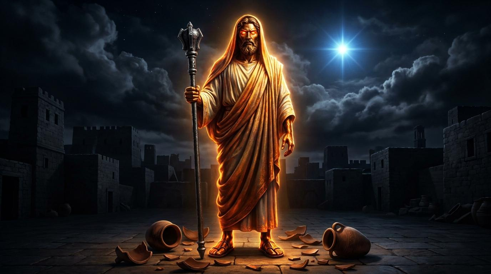

在妥協的洪流中持守烈火的聖潔
各位弟兄姊妹，推雅推喇教會的致命傷，就是將「愛心」變成了「姑息」。他們認為在世上生存，稍微妥協一下無傷大雅。但耶穌如火焰的眼目，看穿了我們試圖掩蓋的妥協。真正的愛必須包含對罪的指正。
「但你們已經有的，總要持守，直等到我來。那得勝又遵守我命令到底的，我要賜給他權柄制伏列國。」
弟兄姊妹，這就是我們今日的盼望。面對行會的壓力，或許你會失去地上的權勢，但基督應許賜給我們「晨星」。這晨星，就是基督自己，是黑夜盡頭最亮的盼望。

「那得勝又遵守我命令到底的，我要賜給他權柄制伏列國。」
主耶穌，祢是擁有如火燄之目、光輝之足的神之子。在這充滿妥協與誘惑的世代中，我們常隨流失去。求祢用鑒察的眼目照亮我們內心的隱密處；賜給我們屬靈的敏銳度，識破一切披著文化與利益外衣的「耶洗別」網羅。懇求聖靈賜給我們持守真理的勇氣，寧願為祢失去地上的利益，也不願失去天上的賞賜。阿們。
推雅推喇以行會著名，參與行會必須拜偶像。耶穌以《但以理書》10:6的榮耀形象顯現，對比當地精煉的「光明銅」，宣示其審判的主權。
關鍵問題：為什麼愛心豐富的教會仍被責備？
因他們將「愛心」與「真理」切割，為求生存而容讓異端。
各位弟兄姊妹，推雅推喇教會的致命傷，就是將「愛心」變成了「姑息」。他們認為在世上生存，稍微妥協一下無傷大雅。但耶穌如火焰的眼目，看穿了我們試圖掩蓋的妥協。真正的愛必須包含對罪的指正。
「但你們已經有的，總要持守，直等到我來。那得勝又遵守我命令到底的，我要賜給他權柄制伏列國。」
弟兄姊妹，這就是我們今日的盼望。面對行會的壓力，或許你會失去地上的權勢，但基督應許賜給我們「晨星」。這晨星，就是基督自己，是黑夜盡頭最亮的盼望。
1. 陶恕 (A.W. Tozer)：「上帝的聖潔不僅是祂沒有罪，而是指祂對一切不聖潔的事物有一種絕對、強烈且不妥協的抗拒。」
2. 潘霍華 (Dietrich Bonhoeffer)：「廉價的恩典是我們教會的死敵...是沒有十字架的恩典。」